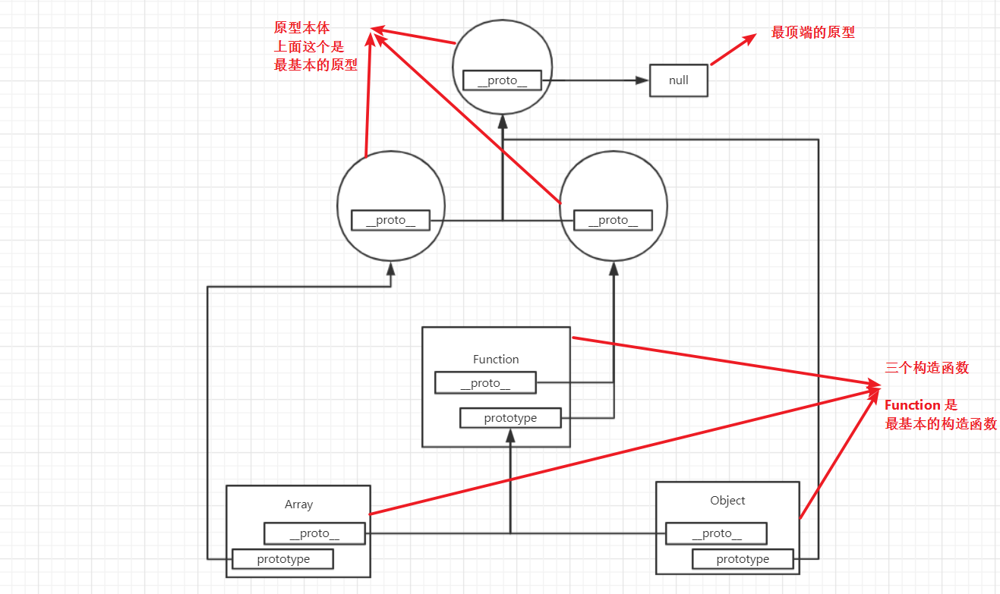

JavaScript 之 原型
浏览器的准备工作
浏览器开启后，会为每一个页面提供一个运行环境（runtime env），运行环境会制造出一些 API（如 console 对象等）当加载到 JS 代码时，就会开始执行代码。可能下面的图片不是那么准确，但大概就是这个意思。
图中的又半部分可以用下面的代码进行表示：
let a = 1
let b = 'xyz'
let c = null
let d = {
name: 'san',
info: {
age: '3',
height: '3cm',
}
}先重点关注不知道什么区、栈区和堆区。不知道什么区用来存放变量的名字，如 a b c d，栈区用来存放基本的数据类型（除了对象类型）和对象的地址，而堆区用来存放某个对象本身。
这就是常说的基本数据类型存在于栈区，而复杂（对象）数据类型存在于堆区。一画图就简单明了，根本不需要记忆，也更容易理解。
原型
首先记住这一句话：原型的本质就是一堆内存数据、原型的本质就是一堆内存数据、原型的本质就是一堆内存数据！
接着再记住这一句话：名字是名字，本体是本体、名字是名字，本体是本体、名字是名字，本体是本体！
最后再记住这一句话：你可以叫姬无命，我也可以叫姬无命，我甚至还可以叫姬无力，你甚至也还可以叫姬无力！
话已至此，想必也大概能明白原型为啥会这样难懂吧，不过只要理清名字和本体之间的关系，就能搞懂原型。
原型的诞生过程
原型诞生于神迹区，是浏览器的神迹。浏览器就是一个神，神说要有原型，于是就有了原型，原型一开始也是没有名字的，它不过是内存中的一堆数据，后来它被赋予了原型这个名字，于是原型也就成了原型，不过原型也不仅仅只有一个，神还创造了几个不同的原型，用来适应不同的状况。
用一张图来表示，会比文字描述更加的容易明白。

上面三个（实际不止三个）大圆球就是原型的三个不同的本体，他们是没有名字的，如果要有个称呼的话，那从上到左到右，分别可以称为：Object.prototype、Array.prototype、Function.prototype。
那 __proto__ 是个什么东西呢？ 这是一个隐式原型（名字）,最顶层浏览器设置成了 null，而上面的 prototype 可以称之为显式原型（名字）。每一个对象，都会具有 __proto__，指向生成当前对象的原型，但不是每一个对象都会有 prototype。额外的浏览器将 Function.__proto__ 和 Function.prototype 指向同一个地方（原型本体），意为我构造了我自己。
Object.prototype.__proto__
// null
Array.__proto__ === Function.prototype
// true
Function.__protp__ === Function.prototype
// true顺便说一下， 构造函数的作用是用来产生新的构造函数或者一个具体的实例对象。
让我们继续补充上面的图片。
// 等价 let x = new Array([1,2,3,4,5])
let x = [1,2,3,4,5]
// 等价 let y = new Object({age: 18})
let y = {age: 18}三个重要知识
JS 公式
某实例对象.proto === 其构造函数.prototype
根公理
Object.prototype 是所有对象的直接或间接原型
函数公理
所有的函数都是由 Function 构造的，任意函数.proto === Function.prototype
Google广告
假装这里有广告